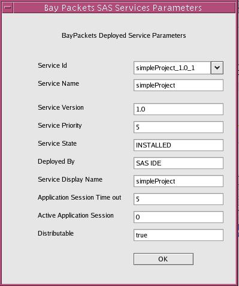

Getting Information About Services deployed on Agnity SIP Application Server
In order to get information regarding any service deployed on Agnity SIP Application Server. Double click any row of the ServiceManagement table or click the ServiceInfo button of the ServiceManagement table. The Agnity CAS Services Parameters dialog shows the values of the various parameters related to the service.
